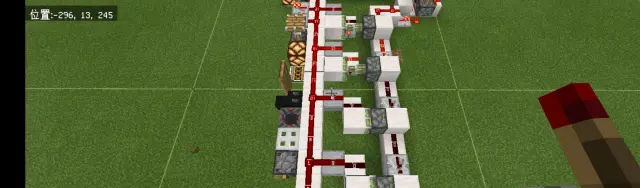
三个月多了
依然是理论缺乏 也没名字
就发个专栏补偿吧233
其实这个信号很常见只是被大家忽略了应该（ 我只是发现的比较多就算留档吧 这是目前我见到的最精简的版本了
================================== 图1,2:用于调试的单次触发器 可直接发出这种信号
（只能红石火把放置可见原理问题就在火把身上）
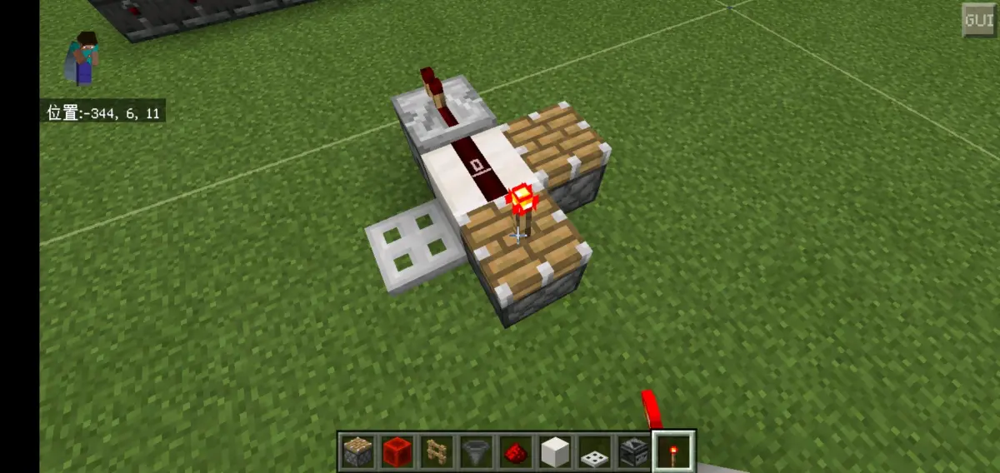
正在放置红石火把
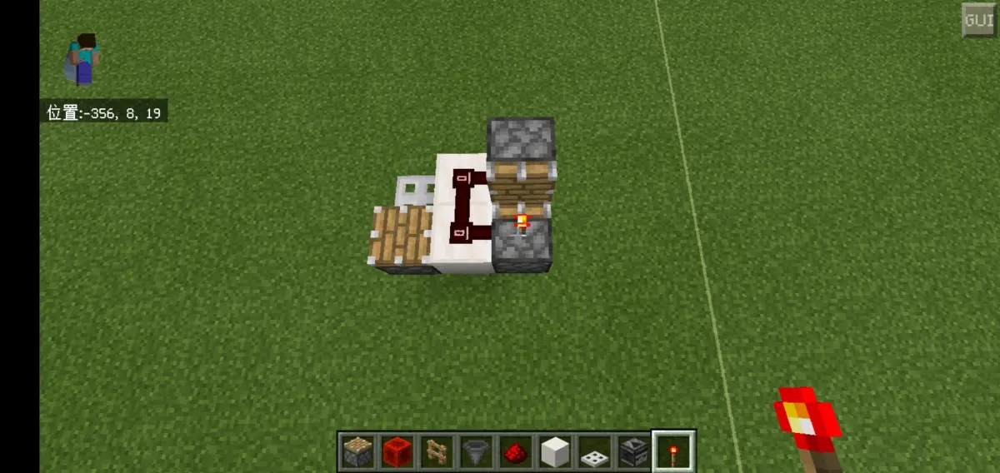
正在放置红石火把
PS:你们经常用的红石块+红石火把的调试短脉冲在BE基岩版特征和-0t一样，这个只是换成了活塞
==================================
图3：支持电路输入直接发出这个信号（单个目前最精简的触发电路）
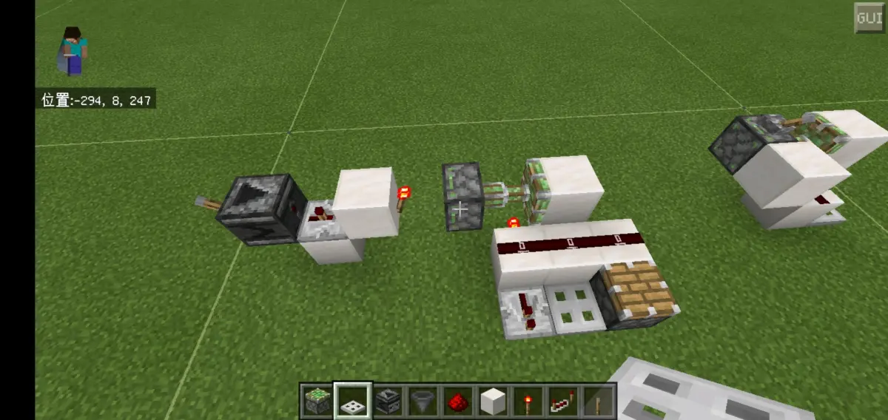
活塞臂下面的红石火把是必须斜插在红石粉下面的方块的
==================================
图4:多接几个堆叠变成“持续”（微观上不持续）的信号（可用于迷惑玩家）
视频: 网页链接
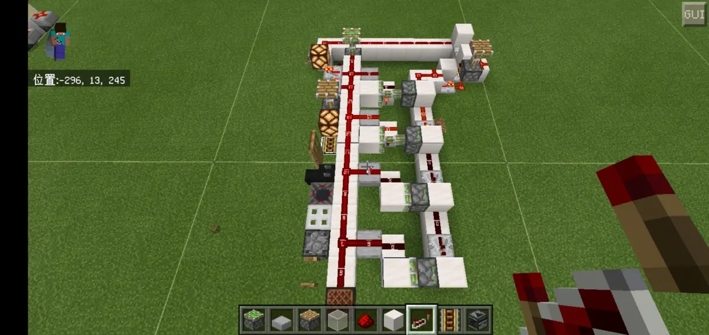
电路正在运行
列举一下所有元件接收这条信号的行为吧： 能被激活的：红石火把、中继器、比较器、普通活塞、粘性活塞、红石灯、漏斗、各种材质围墙、音符盒、命令方块、普通铁轨（激活会在附近条件允许下变向） 不能被激活的：充能铁轨、激活铁轨、各种材质门、龙头、各种材质活板门、投掷器、发射器 以上列举的能被接收正常信号并有相应反应的元件都是对应接收普通高频火把信号时出现的行为（持续激活和闪烁）:
在这条接收线上能被激活的BE阶段元件(Block Event)接收普通的火把高频也会持续激活
在这条接收线上不能被激活的元件接收普通火把高频是会跟随高频闪烁的
==================================
接收烧火把元件行为分类
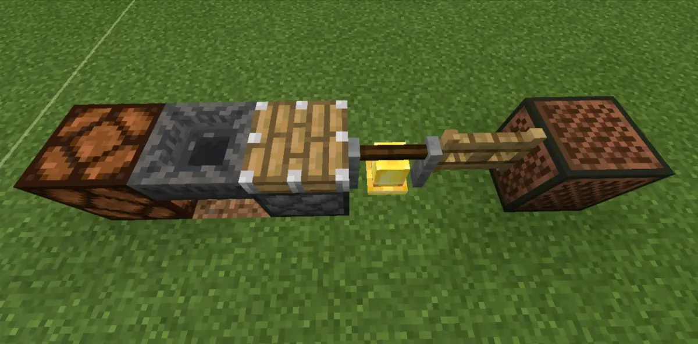
接收烧火把持续激活不鬼畜
上图举例为持续激活元件，直到火把高频停止闪元件也停止激活，可以把它们称之为烧持元件；可以发现，烧火把和经典比较器高频都是一样的频率，都是2t一周期，但是只有烧火把能做到对这类元件持续激活，比较器高频（13-0的接位）接它们符合传统理论会闪，可见问题就在红石火把身上；
红石灯下沿熄灭慢符合理，活塞过了cd在信号为0时理应收回但事实是不收回，其他2t一周期的元件就更加不符合传统理论了。
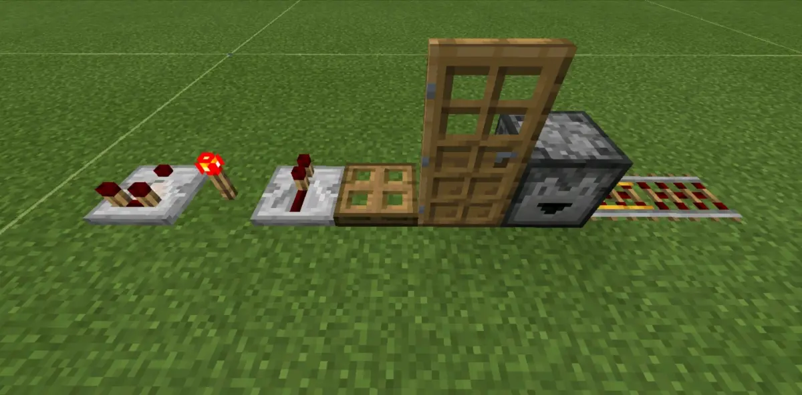
接收烧火把断续激活鬼畜
上图举例为不持续激活元件，跟随烧火把本来有的频率闪烁；可以把它们称之为烧断元件。
接下来我们将在这2个分类元件中选出2个代表为下面作分析。用活塞代表烧持元件，用活板门代表烧断元件。
活塞推拉方块到位位置有火把信号源时接活板门
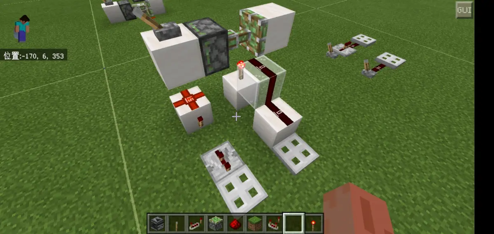
拉杆拉回，活板门同时开启。
从左往右依次计算：
第一路红石火把1t+中继器2t=3t
第二路拉杆接入启动延时1t+活塞1t+到位启动延时1t=3t
活塞推拉方块到位位置有烧火把信号源时接活塞
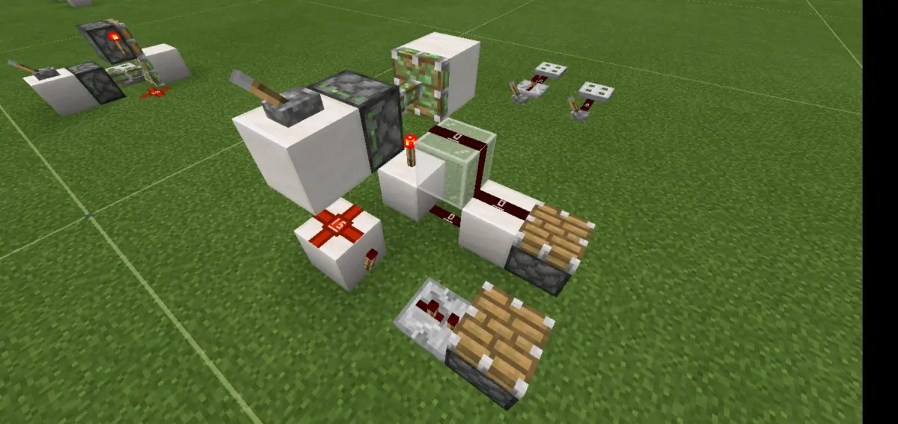
拉杆拉回，活塞同时开启。
从左往右依次计算：
第一路红石火把1t+中继器2t=3t
第二路拉杆接入启动延时1t+活塞1t+到位启动延时1t=3t
活塞推拉方块到位位置有烧火把信号源时接活板门
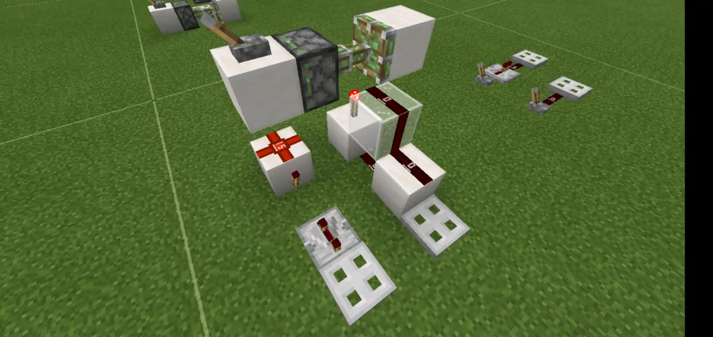
拉杆拉回，活板门同时开启。
从左往右依次计算：
第一路红石火把1t+中继器3t=4t
第二路拉杆接入启动延时1t+活塞1t+红石火把熄灭1t+红石火把亮起1t=4t
可以发现，当出现活塞推拉方块到位位置有烧火把信号源时接活板门时，活塞收回带来的启动延时活板门并不响应（原因未知，可能和更新顺序有关）所以活板门直到红石火把熄灭-亮起后才开始接受信号。
现在可以在已有的结论解释下单个触发器的原理了。
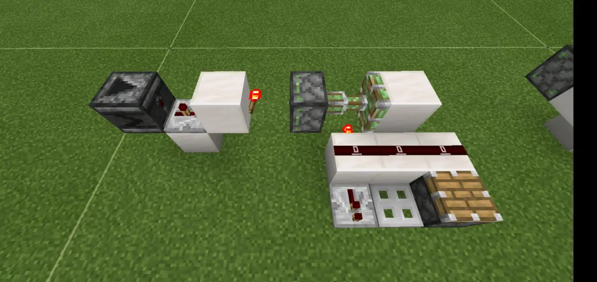
活塞运动3t，只考虑红石粉被激活了1t，中继器无启动延时故直接更新，输出活塞在粘性活塞收回后存在启动延时，而活板门在粘性活塞收回带来的启动延时活板门并不响应，活板门直到红石火把熄灭-亮起后才能接受信号，但第3t活塞就开始重新推出复位了，3<4提早断了信号故活板门不响应。
你们有兴趣的可以试试玩玩，说不定摸出来的比我还多（
==================================
结束 也没什么好讲的了 欢迎有问题或意见什么的在评论区留言!拜拜～